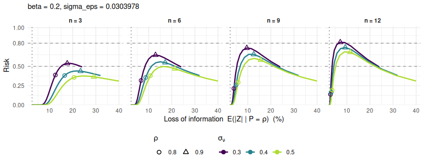

Protect magnitude tables — turnover, payroll, output — against disclosure, and know exactly what that protection costs. dominoise implements a perturbation mechanism whose risk and utility metrics are available in closed form, so that choosing its parameters is an analytical decision rather than an empirical one: no simulation, no recalibration on the data.
The mechanism
Each positive total Y is multiplied by a Gaussian noise combining two components:
where rho = X1 / Y is the share of the largest contributor in the total.
The dominance-driven component rho^n * nu concentrates the perturbation on the cells that a dominant contributor makes sensitive; its weight fades as rho moves away from 1, the faster the larger n. The general-purpose component eps perturbs every cell at a uniform relative rate and carries the residual protection against differencing, where the risk is not borne by a dominant contributor. Three parameters govern the whole mechanism: sigma_nu, sigma_eps and n.
From this distribution, the package derives in closed form the information loss and a risk measure for each of three attack scenarios:
| Scenario | Attacker | Rule transposed |
|---|---|---|
| I — external inference | attributes the whole published total to the dominant contributor | dominance rule (1, k) |
| II — internal inference | a contributor subtracts their own value from the total | p%-rule |
| DIFF — differencing | subtracts two totals known to differ by a single unit | — |
Expected data
dominoise works on an already aggregated table, with already aggregated cell keys:
| Column | Required | Content |
|---|---|---|
total |
yes | the aggregate Y, strictly positive |
x1 |
yes | largest individual contribution, same unit as total
|
x2 |
no | second largest contribution — enables the scenario-II assessment |
ck_var |
yes | cell key, in [0;1] (or set reduce_key = TRUE to take the fractional part of a raw sum of individual keys) |
library(dominoise)
set.seed(4081789)
n_cells <- 500
turnover <- round(runif(n_cells, 1e3, 1e6))
share <- rbeta(n_cells, 2, 2)
tab <- data.frame(
turnover = turnover,
x1 = round(share * turnover),
x2 = round(0.5 * (1 - share) * turnover),
ck = runif(n_cells)
)
head(tab, 3)
#> turnover x1 x2 ck
#> 1 693715 214151 239782 0.83204403
#> 2 977153 288518 344317 0.63581677
#> 3 278024 163332 57346 0.04611336The workflow
Calibration proceeds in two steps, each following the same pattern: explore a theoretical grid, look at the trade-off, commit the decision into the parameter object. Everything is data-free until the last step.
1. The differencing noise sets sigma_eps
sigma_eps is the only parameter able to control the differencing risk, and also the one that sets the loss floor borne by every cell, including the least sensitive. Choose an accuracy threshold beta and a risk ceiling tau; the required sigma_eps follows analytically.
grid_diff <- pm_calib_diff(tau = seq(0.80, 0.95, 0.01))
head(grid_diff)
#> beta tau sigma_eps EZ CI
#> 1 0.05 0.50 0.07413011 5.914727 14.529235
#> 2 0.05 0.55 0.06618878 5.281101 12.972763
#> 3 0.05 0.60 0.05940915 4.740164 11.643979
#> 4 0.05 0.65 0.05349944 4.268637 10.485697
#> 5 0.05 0.70 0.04824237 3.849184 9.455330
#> 6 0.05 0.75 0.04346506 3.468010 8.518994
params <- pm_params()
params <- pm_commit_diff(params, beta = 0.05, tau = 0.90)2. The dominance noise sets sigma_nu and n
At that fixed sigma_eps, the scenario-I risk and the information loss both depend on sigma_nu and n. The two objectives move in opposite directions with n: utility improves at every rho < 1, while the worst-case risk rises. The rule is therefore to keep the largest n that still meets the ceiling.
grid_dom <- pm_calib_dominance(params, sigma_nu = c(0.3, 0.4, 0.5))
summary(grid_dom)
#> sigma_nu sigma_eps n beta rho_at_max_risk risk_max EZ_min EZ_max CI_min
#> 0.3 0.03 3 0.2 0.92 0.539 2.425 24.059 5.958
#> 0.3 0.03 6 0.2 0.90 0.647 2.425 24.059 5.958
#> 0.3 0.03 9 0.2 0.90 0.737 2.425 24.059 5.958
#> 0.3 0.03 12 0.2 0.90 0.812 2.425 24.059 5.958
#> 0.4 0.03 3 0.2 0.88 0.441 2.425 32.007 5.958
#> 0.4 0.03 6 0.2 0.88 0.559 2.425 32.007 5.958
#> 0.4 0.03 9 0.2 0.90 0.656 2.425 32.007 5.958
#> 0.4 0.03 12 0.2 0.90 0.745 2.425 32.007 5.958
#> 0.5 0.03 3 0.2 0.86 0.376 2.425 39.968 5.958
#> 0.5 0.03 6 0.2 0.86 0.499 2.425 39.968 5.958
#> 0.5 0.03 9 0.2 0.88 0.603 2.425 39.968 5.958
#> 0.5 0.03 12 0.2 0.88 0.687 2.425 39.968 5.958
#> CI_max
#> 59.100
#> 59.100
#> 59.100
#> 59.100
#> 78.625
#> 78.625
#> 78.625
#> 78.625
#> 98.179
#> 98.179
#> 98.179
#> 98.179
pm_suggest_n(params, sigma_nu = c(0.3, 0.4, 0.5))
#> sigma_nu sigma_eps beta tau target n_max risk_at_n_max EZ_rho1
#> 1 0.3 0.03039784 0.2 0.9 0.9 16.15204 0.9 24.05910
#> 2 0.4 0.03039784 0.2 0.9 0.9 18.89717 0.9 32.00741
#> 3 0.5 0.03039784 0.2 0.9 0.9 20.91616 0.9 39.96789
#> EZ_rho_dom CI_rho1 CI_rho_dom
#> 1 2.511317 59.09999 6.168926
#> 2 2.470635 78.62462 6.068993
#> 3 2.454202 98.17914 6.028625The trade-off map traces, for each candidate pair, the risk against the information loss as rho runs over ]0;1] — the producer reads off both the worst-case risk and what it costs in utility:
plot(grid_dom)
params <- pm_commit_dominance(params, sigma_nu = 0.4, n = 4)
params
#> <pm_params>
#> policy
#> dominance : beta = 0.2, tau = 0.9
#> p%-rule : beta = 0.1, tau = 0.9, s = 0.95
#> diff : beta = 0.05, tau = 0.9
#> parameters of the mechanism
#> sigma_nu = 0.4
#> sigma_eps = 0.03039784
#> n = 43. Apply the noise
res <- pm_perturb(
tab,
total = "turnover",
x1 = "x1",
x2 = "x2",
ck_var = "ck",
params = params
)
head(res[, c("turnover", "x1", "rho", "ck_nu", "turnover_pert")], 3)
#> turnover x1 rho ck_nu turnover_pert
#> 1 693715 214151 0.3087017 0.5284720 701300.0
#> 2 977153 288518 0.2952639 0.5410590 971521.7
#> 3 278024 163332 0.5874745 0.9947755 311959.84. Check what was achieved
Because the mechanism is analytical, the loss and the attack success rate observed on the table should track the values predicted before any data were touched. That agreement is the natural consistency check to present to a disclosure review board.
assess_utility_empirical(res)
#> n_cells mean_abs_dev median_abs_dev q90_abs_dev max_abs_dev rmse_rel
#> 1 500 6.039999 3.26849 14.64664 58.2566 10.49667
#> theo_mean_abs pct_above_5 pct_above_10 pct_above_20
#> 1 5.691444 34.4 16.6 6.6
assess_risk_empirical(res, scenario = "I")
#> scenario beta n_cells observed_pct theo_mean theo_max
#> 1 I 0.2 500 8.4 0.07499035 0.4814939Function reference
Two prefixes carry the whole API. pm_ for the functions that calibrate the parameters or apply the noise; assess_ for the ones that measure risk and utility.
| Function | Purpose |
|---|---|
pm_params() |
container for every policy and mechanism choice |
pm_calib_diff(), pm_commit_diff()
|
step 1 — explore and set sigma_eps
|
pm_calib_dominance(), pm_suggest_n(), pm_commit_dominance()
|
step 2 — explore and set sigma_nu and n
|
pm_plot_risk_profile(), pm_plot_risk_max(), pm_plot_tradeoff()
|
the paper’s calibration figures |
pm_draws(), pm_perturb()
|
derive the draws from the keys, apply the mechanism |
assess_loss_expectation(), assess_loss_ci()
|
a-priori utility, conditional on rho
|
assess_risk_I(), assess_risk_II()
|
a-priori risk measures |
assess_utility_empirical(), assess_risk_empirical()
|
ex-post metrics on the perturbed table |
Limitations
Scenario II is not controlled in its worst case. Two informed contributors sharing the whole of a cell cannot be protected at perturbation levels compatible with acceptable utility. As soon as the configuration is slightly relaxed — the two largest contributors covering, say, 95% of the total rather than 100% — the mechanism does provide meaningful protection.
The noise is multiplicative, hence ineffective on zeros and values close to zero. pm_perturb() leaves non-positive totals untouched and warns about them; they need a separate treatment.
Risk measures are conditional on the attack scenario occurring, and on the actual dominance of the cell, which only the producer knows.
Governing the keys
Consistency over time — the same cell always receiving the same perturbation — rests on the reproducibility of the hashed string, which combines the cell key, the indicator name and the aggregation operation. Two consequences to plan for before production:
- renaming an indicator between two releases changes every draw for that indicator, and reopens the averaging attack the keys are meant to prevent;
-
key_digits(9 by default) fixes how the numeric key is turned into text before hashing. Changing it changes every draw. It is recorded in thepm_metaattribute of the perturbed table — archive it with the output.
Reference
Jamme, J. (2026). Parsimonious perturbation mechanism for magnitude tables with analytical risk-utility metrics. ResearchGate
All the results of the paper are reproducible from a companion repository: InseeFrLab/perturbation-mechanism-for-aggregates.
citation("dominoise")